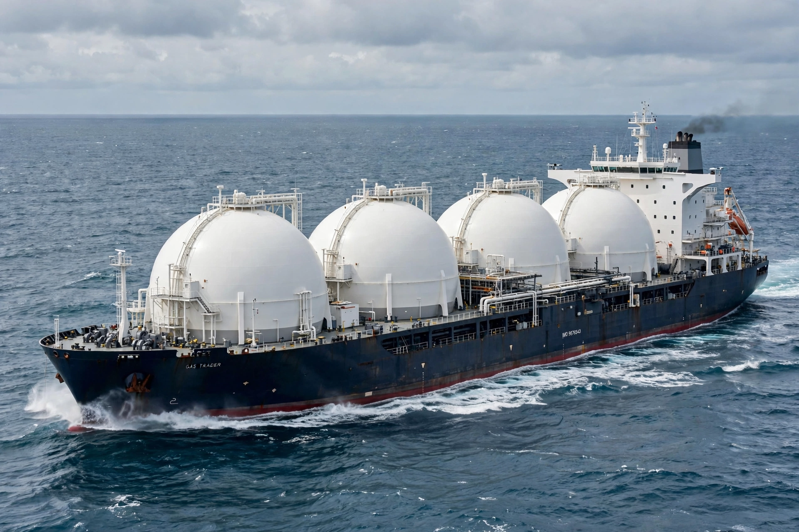

| Composition | Mainly methane, with ethane, propane and butane fractions |
|---|---|
| Liquefaction temp. | −162 °C (−260 °F) at atmospheric pressure |
| Volume reduction | About 600:1 versus gas at standard conditions |
| Energy density | Approx. 22–25 MJ per litre |
Liquefied natural gas (LNG) is natural gas (predominantly methane, CH4) that has been cooled to a liquid state at roughly −162 °C (−260 °F) for shipping and storage. Liquefaction reduces its volume to about 1/600th of the gaseous state, making it economical to transport by ship between markets not connected by pipelines.
Gas is purified and refrigerated in multi-stage liquefaction trains at export terminals, loaded onto insulated LNG carriers — typically using spherical Moss tanks or membrane systems — and regasified at import terminals. Major exporters include the United States, Australia and Qatar, while Japan, China and South Korea are leading importers. Commercial trade began in 1964 between Algeria and the United Kingdom and France, and global LNG trade has grown rapidly since the 2000s, with floating liquefaction (FLNG) vessels added in the 2010s.
Regasified LNG feeds gas grids for heating, electricity generation and industry, and LNG is also used directly as a marine and heavy-truck fuel and for peak-shaving storage. LNG itself is not flammable as a liquid, and spills evaporate rather than pooling, but the cold liquid can cause frostbite and embrittlement, and a vapour cloud can ignite; safety debates accompanied the siting of terminals after events such as the 1944 Cleveland LNG disaster.
Burning natural gas emits less carbon dioxide per unit of energy than coal or oil, but methane leakage along the LNG supply chain can offset some or all of that advantage, making LNG's role in the energy transition contested.